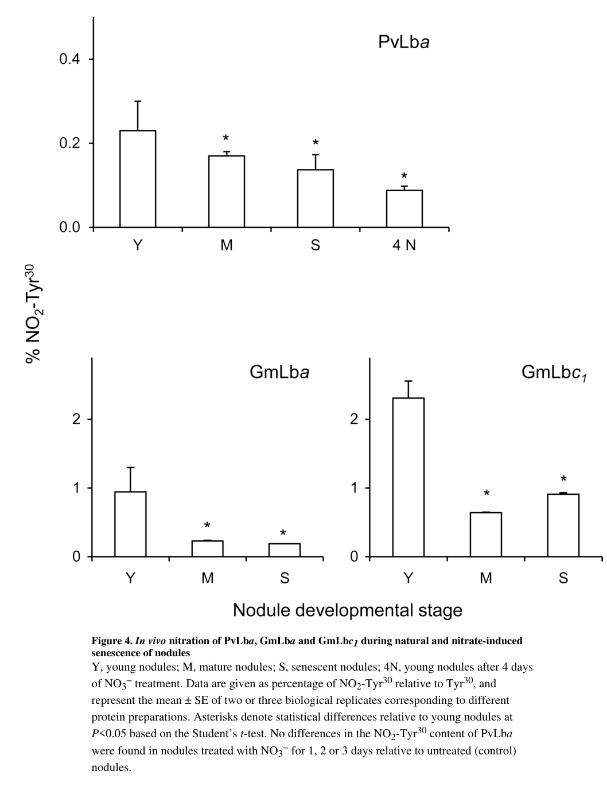

LBA (UniProt P02234; LGBA_PHAVU, "PvLba") encodes leghemoglobin alpha / leghemoglobin component A of Phaseolus vulgaris (common/kidney bean), a member of the plant globin family (InterPro IPR000971 Globin, IPR001032 Leghaemoglobin-like, IPR019824 Leghaemoglobin_Fe_BS). It is a small (~16 kDa, 146 aa) monomeric heme protein expressed at very high abundance specifically in the cytosol of infected cells of functional legume root nodules. Its core molecular function is reversible, high-affinity binding of dioxygen at a pentacoordinated ferrous (Fe2+) heme iron. Physiologically, leghemoglobin resolves the nodule "oxygen paradox": it acts as an oxygen carrier/buffer that delivers O2 toward the symbiosomes to sustain the high respiratory flux of nitrogen-fixing bacteroids while keeping free O2 extremely low (sub-micromolar, reported <50 nM in infected cells) so that the oxygen-labile bacterial nitrogenase is not inactivated. This O2-homeostasis role is essential for symbiotic nitrogen fixation. Beyond O2 transport, PvLba also participates in nodule nitrogen/oxidative chemistry: it is nitrated in vivo on distal-pocket tyrosines (mainly Tyr-31, with Tyr-26 and Tyr-134) by a nitrite/peroxide-dependent (ferryl-Lb) mechanism, and the broader nodule hemoglobin network contributes to NO/ROS homeostasis. UniProt also notes a phosphoserine (Ser-46) that modulates the heme pocket. The protein functions in the infected-cell cytosol (a nucleus localization is asserted only by similarity/ISS and is not the site of its O2-carrier function). The gene symbol "LBA" here refers unambiguously to the bean nodule leghemoglobin and is not to be confused with unrelated "LBA" symbols (e.g. mammalian albumin) in other organisms.
| GO Term | Evidence | Action | Reason |
|---|---|---|---|
|
GO:0005634
nucleus
|
IEA
GO_REF:0000044 |
KEEP AS NON CORE |
Summary: Nuclear localization asserted via UniProtKB Subcellular Location keyword mapping (SL-0191). The UniProt nucleus assignment is itself only "By similarity" (ECO:0000250) to other legume globins, not experimental for PvLba.
Reason: Leghemoglobin's functionally relevant location is the cytosol of infected nodule cells, where it buffers and delivers O2 to symbiosomes; the deep-research synthesis places PvLba in the infected host-cell cytosol in proximity to symbiosomes, not the nucleus. The UniProt nucleus call is inferred by similarity (ISS/By similarity) to P02240 and is not supported by gene-specific experimental evidence for the bean protein. It is retained as non-core because a globin nuclear pool, if present, is not where the O2-carrier function is executed.
Supporting Evidence:
file:PHAVU/LBA/LBA-deep-research-falcon.md
Lb is consistently described as **nodule-localized** and functioning in the infected nodule environment
|
|
GO:0005829
cytosol
|
IEA
GO_REF:0000044 |
ACCEPT |
Summary: Cytosolic localization assigned via UniProtKB Subcellular Location keyword mapping (SL-0091; UniProt "Cytoplasm, cytosol"). This is the functionally meaningful location of leghemoglobin.
Reason: This is the correct core cellular component. Leghemoglobin is a soluble cytosolic hemeprotein present at very high concentration in the cytosol of infected nodule cells, where it buffers free O2 and ferries O2 toward the symbiosome membrane. Both UniProt ("Cytoplasm, cytosol") and the literature synthesis localize PvLba to the infected host-cell cytosol.
Supporting Evidence:
file:PHAVU/LBA/LBA-uniprot.txt
Cytoplasm, cytosol
file:PHAVU/LBA/LBA-deep-research-falcon.md
Lb is described as an abundant hemeprotein (reported in the **millimolar range**)
|
|
GO:0019825
oxygen binding
|
IEA
GO_REF:0000002 |
ACCEPT |
Summary: Oxygen-binding molecular function assigned from InterPro globin/leghemoglobin domain signatures. This is a core, correct molecular function of PvLba.
Reason: Reversible O2 binding at the ferrous heme is the defining molecular activity of leghemoglobin and is directly consistent with the UniProt FUNCTION statement and the globin domain architecture. The InterPro-based assignment is at an appropriate level of specificity for a globin and is corroborated by the literature synthesis describing PvLba as an oxygen-binding heme globin.
Supporting Evidence:
file:PHAVU/LBA/LBA-uniprot.txt
facilitates the diffusion of oxygen to the bacteroids while preventing
PMID:25603991
essential role as an O2 transporter
file:PHAVU/LBA/LBA-deep-research-falcon.md
**only ferrous (Fe²⁺) leghemoglobin binds O₂**, so maintenance of the reduced state is integral to function
|
|
GO:0020037
heme binding
|
IEA
GO_REF:0000002 |
ACCEPT |
Summary: Heme-binding molecular function assigned from InterPro globin/leghemoglobin domain signatures. Correct and core: leghemoglobin is a b-type heme protein.
Reason: Heme binding is essential to leghemoglobin function: O2 is bound at a pentacoordinated ferrous heme b, and UniProt annotates heme b binding residues (e.g. His-93 proximal, and contacts at 46 and 96) on the bean protein. The deep-research synthesis explicitly describes PvLba as a heme-binding globin. This is the more informative and specific molecular-function counterpart to the broad SPKW "metal ion binding" term and is the preferred replacement target for it.
Supporting Evidence:
file:PHAVU/LBA/LBA-uniprot.txt
Leghemoglobin that reversibly binds oxygen O(2) through a
file:PHAVU/LBA/LBA-deep-research-falcon.md
**Leghemoglobins (Lbs)** are **heme-containing globins**
|
|
GO:0005634
nucleus
|
ISS
GO_REF:0000024 |
KEEP AS NON CORE |
Summary: Nuclear localization transferred by sequence-similarity (ISS) from UniProtKB:P02240 (soybean leghemoglobin a). Duplicates the IEA nucleus annotation with a different evidence path.
Reason: This ISS annotation rests on similarity to soybean P02240 rather than on gene-specific experimental data for PvLba, and the nucleus is not where leghemoglobin carries out its oxygen-carrier function (the infected-cell cytosol is). As with the IEA nucleus annotation, it is retained but marked non-core: any nuclear globin pool is not the locus of the protein's core O2-buffering/transport activity.
Supporting Evidence:
file:PHAVU/LBA/LBA-deep-research-falcon.md
functioning in the infected nodule environment where symbiosomes and nitrogenase activity occur
|
|
GO:0005344
oxygen carrier activity
|
IEA
GO_REF:0000043 |
ACCEPT |
Summary: SPKW (GO_REF:0000043) annotation derived from the UniProt keyword "Oxygen transport"; snapshot-only, removed in the current GOA release. Oxygen carrier activity is the defining molecular function of leghemoglobin.
Reason: GOA's removal of this annotation was NOT justified - it caused collateral damage by dropping a correct, CORE molecular-function term. Leghemoglobin is, by definition, an oxygen carrier: it reversibly binds O2 at a ferrous heme and shuttles/buffers it in nodule cells. The deep-research synthesis describes PvLba as an oxygen-binding heme globin that facilitates O2 diffusion/transport and buffers O2 in nodules, occurring at high (millimolar) concentration in the infected host-cell cytosol as a "high-abundance oxygen buffer/transport system". UniProt's FUNCTION statement states the protein "facilitates the diffusion of oxygen to the bacteroids". This is the most precise and most informative MF for leghemoglobin and should be retained (it complements the InterPro "oxygen binding" term). Re-add and ACCEPT.
Supporting Evidence:
PMID:25603991
essential role as an O2 transporter
file:PHAVU/LBA/LBA-deep-research-falcon.md
Lb is described as an abundant hemeprotein (reported in the **millimolar range**)
file:PHAVU/LBA/LBA-uniprot.txt
facilitates the diffusion of oxygen to the bacteroids while preventing
|
|
GO:0015671
oxygen transport
|
IEA
GO_REF:0000043 |
ACCEPT |
Summary: SPKW (GO_REF:0000043) annotation derived from the UniProt keyword "Oxygen transport"; snapshot-only, removed in the current GOA release. This is the biological-process counterpart of leghemoglobin's oxygen-carrier molecular function.
Reason: GOA's removal of this annotation was NOT justified - it is collateral damage. Oxygen transport is exactly the process leghemoglobin performs: it delivers O2 toward the symbiosomes to support bacteroid respiration while buffering free O2. The deep-research synthesis states leghemoglobins "function as O2 transporters delivering O2 to symbiosomes" and that PvLba "facilitates O2 diffusion/transport and buffers O2 in nodules", and UniProt records that the protein facilitates the diffusion of oxygen to the bacteroids. The term is accurate and core; re-add and ACCEPT. (It is more informative than the bare "nodulation" process term that was also keyword-derived.)
Supporting Evidence:
PMID:25603991
essential role as an O2 transporter
file:PHAVU/LBA/LBA-deep-research-falcon.md
PvLba supports this by **delivering O₂ at low free concentrations** (oxygen buffering/transport) to infected nodule cells and symbiosomes
file:PHAVU/LBA/LBA-uniprot.txt
facilitates the diffusion of oxygen to the bacteroids while preventing
|
|
GO:0046872
metal ion binding
|
IEA
GO_REF:0000043 |
MODIFY |
Summary: SPKW (GO_REF:0000043) annotation derived from the UniProt keywords "Metal-binding" and "Iron"; snapshot-only, removed in the current GOA release. Leghemoglobin binds the iron atom of its heme prosthetic group, so the term is correct but very broad.
Reason: GOA's removal of this generic keyword-derived term lost little, because the biology is better captured by more specific terms. PvLba does bind a metal ion - the heme iron - and only the ferrous (Fe2+) form binds O2 efficiently, consistent with canonical globin chemistry. However, "metal ion binding" (the broad parent) is uninformative for a globin: the precise, gene-relevant terms are "heme binding" (GO:0020037, already present and ACCEPTed in current GOA, capturing binding of the heme b cofactor) and "iron ion binding" (GO:0005506, capturing the coordinated heme iron). The annotation should therefore be re-added but MODIFIED to these specific terms rather than retained at the broad metal-ion level. Tier B (broad/over-annotated but not wrong).
Proposed replacements:
heme binding
iron ion binding
Supporting Evidence:
file:PHAVU/LBA/LBA-uniprot.txt
Leghemoglobin that reversibly binds oxygen O(2) through a
file:PHAVU/LBA/LBA-uniprot.txt
pentacoordinated heme iron
file:PHAVU/LBA/LBA-deep-research-falcon.md
**only ferrous (Fe²⁺) leghemoglobin binds O₂**, so maintenance of the reduced state is integral to function
|
|
GO:0009877
nodulation
|
IEA
GO_REF:0000043 |
MARK AS OVER ANNOTATED |
Summary: SPKW (GO_REF:0000043) annotation derived from the UniProt keyword "Nodulation"; snapshot-only, removed in the current GOA release. The keyword reflects that leghemoglobin is a hallmark protein OF the nodule, not that the protein drives the nodulation/organogenesis program.
Reason: GOA's removal of this annotation was JUSTIFIED. "Nodulation" denotes the developmental process of nodule formation/organogenesis triggered by rhizobial symbiosis. PvLba is not part of that developmental program; it is a highly abundant nodule-EXPRESSED oxygen carrier whose function is O2 binding/transport and buffering within the already-formed nodule. The keyword captures the nodule expression/localization context ("localized in host cells associated with the symbiosis"; "specialization for infected nodule cells") rather than a developmental role - expression and location are not the same as participation in the organogenesis process. The protein's genuine biological contribution (nodule O2 homeostasis enabling symbiotic nitrogen fixation) is already and better captured by "oxygen transport" (GO:0015671, re-added above) and is more precisely described as symbiotic nitrogen fixation support. The bare "nodulation" term is an over-broad/contextual over-annotation; its removal is appropriate. Tier A (removal justified). If a process term beyond oxygen transport were desired, "nitrogen fixation" (GO:0009399) would be the biologically apt downstream context.
Proposed replacements:
oxygen transport
Supporting Evidence:
file:PHAVU/LBA/LBA-deep-research-falcon.md
Lb is a **marker of functional (pink) nodules**
file:PHAVU/LBA/LBA-deep-research-falcon.md
accumulate to very high levels in legume root nodules
PMID:25603991
essential role as an O2 transporter
|
Q: Are the millimolar levels of leghemoglobin in bean nodules rate-limiting for symbiotic nitrogen fixation, and does natural genotype variation in PvLba abundance correlate with fixation performance?
Suggested experts: Manuel Becana, Michael Udvardi
Q: What is the in vivo functional consequence of distal-pocket tyrosine nitration (Tyr-31/Tyr-26/Tyr-134) and Ser-46 phosphorylation for the O2 affinity and oxygen-carrier activity of PvLba during nodule development and senescence?
Suggested experts: Manuel Becana
Experiment: Generate PvLba loss-of-function (RNAi or CRISPR) bean nodules and measure free O2 concentration, bacteroid respiration, nitrogenase activity and nitro-oxidative stress markers, to test whether bean leghemoglobin is required for nodule O2 homeostasis as shown for Lotus leghemoglobins.
Hypothesis: Loss of PvLba elevates free O2 and accumulates ROS/NO in infected cells, impairing nitrogenase activity and symbiotic nitrogen fixation.
Type: reverse-genetics phenotyping of symbiotic nitrogen fixation
Experiment: Measure O2 association/dissociation kinetics and equilibrium affinity of recombinant wild-type PvLba versus Tyr31-nitrated and Ser46-phosphomimic variants, and determine whether these PTMs shift the protein between O2-buffering and O2-delivery modes.
Hypothesis: Distal-pocket nitration and Ser-46 phosphorylation modulate heme-pocket chemistry and thereby tune leghemoglobin between buffering and delivering O2 to symbiosomes.
Type: in vitro ligand-binding kinetics on modified protein
The research report should be a detailed narrative explaining the function, biological processes, and localization of the gene product. Citations should be given for all claims.
You should prioritize authoritative reviews and primary scientific literature when conducting research. You can supplement
this with annotations you find in gene/protein databases, but these can be outdated or inaccurate.
We are specifically interested in the primary function of the gene - for enzymes, what reaction is catalyzed, and what is the substrate specificity? For transporters, what is the substrate? For structural proteins or adapters, what is the broader structural role? For signaling molecules, what is the role in the pathway.
We are interested in where in or outside the cell the gene product carries out its function.
We are also interested in the signaling or biochemical pathways in which the gene functions. We are less interested in broad pleiotropic effects, except where these elucidate the precise role.
Include evidence where possible. We are interested in both experimental evidence as well as inference from structure, evolution, or bioinformatic analysis. Precise studies should be prioritized over high-throughput, where available.
The symbol LBA is ambiguous across biology, but the research summarized here is restricted to the UniProt-defined target: UniProt P02234, described as leghemoglobin alpha / Leghemoglobin A (PvLba) from common bean (Phaseolus vulgaris) and belonging to the plant globin (leghemoglobin-like) family. A Phaseolus-specific primary study explicitly refers to “bean Lba (PvLba)” in functional bean nodules and measures its in vivo post-translational modification, supporting that the literature discussed here is on the correct protein identity (PvLba/leghemoglobin A), not an unrelated “LBA” in other taxa. (sainz2015leghemoglobinisnitrated pages 4-6)
Leghemoglobins (Lbs) are heme-containing globins that accumulate to very high levels in legume root nodules and are central to the physiology of symbiotic nitrogen fixation. In functional nodules, Lb is described as an abundant hemeprotein (reported in the millimolar range) whose essential biochemical function is oxygen (O₂) transport/delivery to the symbiosome/respiring nodule tissues while maintaining low free O₂ compatible with oxygen-labile nitrogenase. (sainz2015leghemoglobinisnitrated pages 1-3)
In P. vulgaris nodules specifically, PvLba is treated as the major bean leghemoglobin species in a Phaseolus-focused biochemical study, consistent with UniProt P02234 being a nodule hemoglobin. (sainz2015leghemoglobinisnitrated pages 1-3, sainz2015leghemoglobinisnitrated pages 4-6)
A defining mechanistic point is that only ferrous (Fe²⁺) leghemoglobin binds O₂, so maintenance of the reduced state is integral to function. (sainz2015leghemoglobinisnitrated pages 1-3)
Recent legume work synthesizes the physiological framing: Lb maintains a microoxic environment necessary for nitrogenase while still enabling respiration; free O₂ in infected nodule tissues has been described at nanomolar levels (<50 nM) in modern summaries of nodule physiology. (lamoureux2024theeffectof pages 26-29)
A current consensus view (supported by both Phaseolus primary work and recent legume genetics) is that Lbs are not only O₂ buffers but also intersect strongly with reactive nitrogen species (RNS) and reactive oxygen species (ROS):
A key Phaseolus-specific primary study demonstrated that PvLba is nitrated in functional bean nodules at a tyrosine residue within the heme cavity, with Tyr30 in the distal heme pocket being the predominant nitration site used for quantification. (sainz2015leghemoglobinisnitrated pages 4-6, sainz2015leghemoglobinisnitrated pages 1-3)
Quantitative in vivo observation: in young bean nodules, the fraction of PvLba nitrated at Tyr30 was approximately 0.23%, and nitration decreased in senescent nodules and after nitrate treatment; this is shown in the paper’s quantification figure. (sainz2015leghemoglobinisnitrated media 99e0ea56)
Mechanistic in vitro support (physiology-linked conditions): PvLba nitration required nitrite + hydrogen peroxide (H₂O₂), and was inhibited by iron chelation or scavengers of nitrating radicals, supporting a nitrite/peroxide-dependent mechanism coupled to heme redox chemistry. The study used conditions described as physiologically relevant (e.g., ferric Lb ~10 µM; H₂O₂ 20–100 µM; nitrite ~100 µM) to generate substantial nitration in vitro, whereas omission of H₂O₂ prevented nitration. (sainz2015leghemoglobinisnitrated pages 4-6)
Functional interpretation (author analysis): the authors suggest Lb can act as a sink for toxic reactive nitrogen/oxygen species (e.g., peroxynitrite-related chemistry), tying a Phaseolus leghemoglobin directly to nodule nitro-oxidative chemistry beyond oxygen transport. (sainz2015leghemoglobinisnitrated pages 1-3)
A 2024 Journal of Experimental Botany study in Lotus japonicus systematically quantified regulation of nodule hemoglobins and used CRISPR mutants lacking Lbs plus transcription-factor mutants. Major findings relevant to functional annotation of PvLba by homology/conservation include:
Although these experiments are not in P. vulgaris, they represent authoritative, modern functional genetics supporting a conserved role of Lbs (including PvLba) in balancing O₂ supply with redox/NO constraints in nodules. (minguillon2024dynamicsofhemoglobins pages 1-2)
A 2024 review in Plant Communications emphasizes:
This consolidates expert-level interpretation that Lb status is tightly linked to both symbiotic performance and nodule lifespan/turnover. (berrabah2024defenseandsenescence pages 1-2)
A 2024 Frontiers in Plant Science transcriptome/anatomy study in soybean–rhizobium combinations reports enrichment and higher expression of oxygen-binding genes (including oxygen-binding proteins such as leghemoglobin) in conditions associated with effective/fully developed nodules, consistent with Lb-mediated microoxia being a central determinant of symbiotic effectiveness. (zadegan2024differentialsymbioticcompatibilities pages 11-12)
Based on Phaseolus-specific biochemistry and cross-legume consensus:
Within the available evidence, Lb is consistently described as nodule-localized and functioning in the infected nodule environment where symbiosomes and nitrogenase activity occur; its function is explicitly tied to delivering O₂ to the symbiosomal membrane and maintaining microoxic conditions. (lamoureux2024theeffectof pages 26-29)
PvLba itself is a bean nodule protein, but the broader leghemoglobin protein class has a major real-world deployment as a color/flavor heme ingredient in plant-based meat analogues, enabled by precision fermentation.
EFSA’s 2024 scientific opinion evaluated soy leghemoglobin produced in genetically modified Komagataella phaffii (LegH Prep) for use as a colouring in meat analogue products and concluded that it does not raise a safety concern at proposed use and use levels. (younes2024safetyofsoy pages 4-6, younes2024safetyofsoy pages 1-2)
Key quantitative statistics from EFSA’s exposure/safety evaluation include:
These regulatory documents provide authoritative, real-world implementation context for leghemoglobin proteins as ingredients, even though they pertain to soybean leghemoglobin rather than PvLba from bean. (younes2024safetyofsoy pages 3-4, younes2024safetyofsoy pages 4-6)
Recent biotechnology literature reports strong progress in recombinant leghemoglobin production:
Across recent authoritative sources, the expert framing of Lb biology converges on:
PvLba (UniProt P02234; gene LBA) is a nodule-localized leghemoglobin that binds O₂ via a heme cofactor (ferrous state) and supports symbiotic nitrogen fixation by buffering and delivering O₂ at very low free concentrations compatible with nitrogenase. PvLba also participates in nodule redox/RNS chemistry: it forms NO-bound complexes and undergoes measurable in vivo tyrosine nitration (primarily Tyr30 in the distal heme pocket) via a nitrite/peroxide-dependent mechanism, linking it to NO/ROS homeostasis in functional nodules. (sainz2015leghemoglobinisnitrated pages 1-3, sainz2015leghemoglobinisnitrated pages 4-6, sainz2015leghemoglobinisnitrated media 99e0ea56)
| Functional aspect | Key statements | Evidence type | Quantitative data | Key references with year and DOI URL | PaperQA citation IDs |
|---|---|---|---|---|---|
| O2 transport/buffering | PvLba is a highly abundant nodule hemeprotein whose essential role is O2 transport/delivery to symbiosomes while buffering free O2 to protect nitrogenase. Closely related leghemoglobins in legumes occur at millimolar concentrations and help maintain very low free O2 in infected cells. | Primary; review | Lb abundance in nodules ~1–5 mM; free O2 reported as <50 nM in nodules in recent legume literature. | Sainz et al., 2015, Plant J. DOI: https://doi.org/10.1111/tpj.12762; Minguillón et al., 2024, J Exp Bot DOI: https://doi.org/10.1093/jxb/erad455 | (sainz2015leghemoglobinisnitrated pages 1-3, minguillon2024dynamicsofhemoglobins pages 1-2, lamoureux2024theeffectof pages 26-29) |
| NO/ROS chemistry | PvLba reacts with reactive nitrogen/oxygen species; ferrous Lb binds NO to form LbNO, and Lbs can convert NO-derived species to nitrate in vitro. Recent mutant data in Lotus indicate that loss of Lbs causes NO and ROS accumulation, supporting a conserved role in nodule redox homeostasis. | Primary; review | In vitro PvLba nitration assays used ~10 µM ferric Lb, 20–100 µM H2O2, and ~100 µM nitrite; nitrate treatments in Lotus study were 0, 0.5, 5, 10 mM KNO3 for 2 d. | Sainz et al., 2015, https://doi.org/10.1111/tpj.12762; Minguillón et al., 2024, https://doi.org/10.1093/jxb/erad455 | (sainz2015leghemoglobinisnitrated pages 4-6, sainz2015leghemoglobinisnitrated pages 1-3, minguillon2024dynamicsofhemoglobins pages 1-2, minguillon2024dynamicsofhemoglobins pages 13-15, minguillon2024dynamicsofhemoglobins pages 16-17) |
| Post-translational modifications | PvLba is nitrated in functional bean nodules, predominantly at Tyr30 in the distal heme pocket, indicating in vivo modification by nitrite/peroxide chemistry. This supports that LBA is an active redox-reactive globin in nodules rather than a passive O2 carrier only. | Primary | Young bean nodules contained ~0.23% nitrated PvLba; in vitro nitration reached ~25–70% under tested oxidant/nitrite conditions; nitration decreased in senescent and nitrate-treated nodules. | Sainz et al., 2015, https://doi.org/10.1111/tpj.12762 | (sainz2015leghemoglobinisnitrated pages 4-6, sainz2015leghemoglobinisnitrated media 99e0ea56) |
| Regulation by nitrate/stress | Recent legume data show Lb genes are strongly down-regulated by nitrate and dark stress, with nitrate-responsive promoter elements implicated. This is relevant to PvLba annotation because leghemoglobin expression is tightly coupled to nodule physiological state and N-fixation activity. | Primary | Nitrate suppressed Lbs after 2 d exposure to 0.5–10 mM KNO3; compensatory regulation between Lb paralogs was observed in Lotus mutants. | Minguillón et al., 2024, https://doi.org/10.1093/jxb/erad455 | (minguillon2024dynamicsofhemoglobins pages 1-2, minguillon2024dynamicsofhemoglobins pages 13-15, minguillon2024dynamicsofhemoglobins pages 16-17, minguillon2024dynamicsofhemoglobins pages 17-18) |
| Role in senescence/defense | Leghemoglobin is a marker of functional pink nodules; oxidation/decrease of Lb accompanies senescence and loss of N-fixation capacity. Reviews and recent studies connect Lb decline with nitro-oxidative stress, defense activation, and senescence-associated changes in antioxidants and proteolysis. | Review; primary | Nodule N2-fixation peak ~4 weeks and lifespan ~10–12 weeks in a recent synthesis; antioxidants in nodules include ascorbate ~1–2 mM and glutathione ~0.5–1 mM; APX ~0.9% of soluble protein. | Berrabah et al., 2024, Plant Commun. DOI: https://doi.org/10.1016/j.xplc.2024.100888; Minguillón et al., 2024, https://doi.org/10.1093/jxb/erad455 | (berrabah2024defenseandsenescence pages 1-2, lamoureux2024theeffectof pages 26-29, minguillon2024dynamicsofhemoglobins pages 13-15, lamoureux2024theeffectof pages 29-32) |
| Applications in food/fermentation | Although not specific to PvLba from bean, closely related leghemoglobins are used as heme/flavor-color ingredients in plant-based meat and are being optimized by precision fermentation in yeasts. Recent biotech studies report substantially improved recombinant production titers. | Biotech; review | K. marxianus intracellular LBA reached 7.27 g/L in 5 L fermentor with heme content 66.32 mg/L; S. cerevisiae intracellular LegH reached 544.8 mg/L and secreted LegH 88.5 mg/L; another K. phaffii process reported highest biomass density 121.80 gDCW/L and LegH yield 0.513 mg/gDCW. | Tian et al., 2024, Front Bioeng Biotechnol. DOI: https://doi.org/10.3389/fbioe.2023.1329016; Huang et al., 2024, Fermentation DOI: https://doi.org/10.3390/fermentation10030146; Suleiko et al., 2024, Fermentation DOI: https://doi.org/10.3390/fermentation10010055 | (tian2024highlevelexpressionof pages 1-2, huang2024efficientsecretoryexpression pages 1-2) |
| Safety/exposure data | Regulatory assessments of soy leghemoglobin produced in GM yeast concluded no safety concern at proposed use levels in meat analogues, though these data apply to soy LegH rather than bean PvLba directly. The evidence is still useful for real-world implementation of the leghemoglobin protein class. | Regulatory | Proposed maximum use level 0.8% soy leghemoglobin protein in meat analogues; mean dietary exposure up to 7.3 mg/kg bw/day and 95th percentile up to 32.9 mg/kg bw/day; NOAEL in 90-day study at highest tested doses corresponded to 2328 mg/kg bw/day (males) and 2865 mg/kg bw/day (females) soy leghemoglobin. | Younes et al., 2024, EFSA J. DOI: https://doi.org/10.2903/j.efsa.2024.8822; Casacuberta et al., 2024, EFSA J. DOI: https://doi.org/10.2903/j.efsa.2024.9060 | (younes2024safetyofsoy pages 3-4, younes2024safetyofsoy pages 4-6, casacuberta2024assessmentofsoy pages 10-11, younes2024safetyofsoy pages 1-2, casacuberta2024assessmentofsoy pages 12-12) |
Table: This table summarizes the functional annotation of Phaseolus vulgaris leghemoglobin A (PvLba; UniProt P02234) using direct bean evidence where available and closely related leghemoglobin evidence for conserved functions, regulation, applications, and safety context.
References
(sainz2015leghemoglobinisnitrated pages 4-6): Martha Sainz, Laura Calvo‐Begueria, Carmen Pérez‐Rontomé, Stefanie Wienkoop, Joaquín Abián, Christiana Staudinger, Silvina Bartesaghi, Rafael Radi, and Manuel Becana. Leghemoglobin is nitrated in functional legume nodules in a tyrosine residue within the heme cavity by a nitrite/peroxide-dependent mechanism. The Plant journal : for cell and molecular biology, 81 5:723-35, Mar 2015. URL: https://doi.org/10.1111/tpj.12762, doi:10.1111/tpj.12762. This article has 80 citations.
(sainz2015leghemoglobinisnitrated pages 1-3): Martha Sainz, Laura Calvo‐Begueria, Carmen Pérez‐Rontomé, Stefanie Wienkoop, Joaquín Abián, Christiana Staudinger, Silvina Bartesaghi, Rafael Radi, and Manuel Becana. Leghemoglobin is nitrated in functional legume nodules in a tyrosine residue within the heme cavity by a nitrite/peroxide-dependent mechanism. The Plant journal : for cell and molecular biology, 81 5:723-35, Mar 2015. URL: https://doi.org/10.1111/tpj.12762, doi:10.1111/tpj.12762. This article has 80 citations.
(lamoureux2024theeffectof pages 26-29): KE Lamoureux. The effect of copper-induced oxidative stress on symbiosis between model legume lotus japonicus and mesorhizobium loti. Unknown journal, 2024.
(minguillon2024dynamicsofhemoglobins pages 13-15): Samuel Minguillón, Ángela Román, Carmen Pérez-Rontomé, Longlong Wang, Ping Xu, Jeremy D Murray, Deqiang Duanmu, Maria C Rubio, and Manuel Becana. Dynamics of hemoglobins during nodule development, nitrate response, and dark stress in lotus japonicus. Journal of Experimental Botany, 75:1547-1564, Nov 2024. URL: https://doi.org/10.1093/jxb/erad455, doi:10.1093/jxb/erad455. This article has 12 citations and is from a domain leading peer-reviewed journal.
(minguillon2024dynamicsofhemoglobins pages 1-2): Samuel Minguillón, Ángela Román, Carmen Pérez-Rontomé, Longlong Wang, Ping Xu, Jeremy D Murray, Deqiang Duanmu, Maria C Rubio, and Manuel Becana. Dynamics of hemoglobins during nodule development, nitrate response, and dark stress in lotus japonicus. Journal of Experimental Botany, 75:1547-1564, Nov 2024. URL: https://doi.org/10.1093/jxb/erad455, doi:10.1093/jxb/erad455. This article has 12 citations and is from a domain leading peer-reviewed journal.
(sainz2015leghemoglobinisnitrated media 99e0ea56): Martha Sainz, Laura Calvo‐Begueria, Carmen Pérez‐Rontomé, Stefanie Wienkoop, Joaquín Abián, Christiana Staudinger, Silvina Bartesaghi, Rafael Radi, and Manuel Becana. Leghemoglobin is nitrated in functional legume nodules in a tyrosine residue within the heme cavity by a nitrite/peroxide-dependent mechanism. The Plant journal : for cell and molecular biology, 81 5:723-35, Mar 2015. URL: https://doi.org/10.1111/tpj.12762, doi:10.1111/tpj.12762. This article has 80 citations.
(berrabah2024defenseandsenescence pages 1-2): Fathi Berrabah, Farouk Benaceur, Chaoyan Yin, Dawei Xin, Kévin Magne, Marie Garmier, Véronique Gruber, and Pascal Ratet. Defense and senescence interplay in legume nodules. Plant Communications, 5:100888, Apr 2024. URL: https://doi.org/10.1016/j.xplc.2024.100888, doi:10.1016/j.xplc.2024.100888. This article has 26 citations and is from a peer-reviewed journal.
(zadegan2024differentialsymbioticcompatibilities pages 11-12): Sobhan Bahrami Zadegan, Wonseok Kim, Hafiz Muhammad Khalid Abbas, Sunhyung Kim, Hari B. Krishnan, and Tarek Hewezi. Differential symbiotic compatibilities between rhizobium strains and cultivated and wild soybeans revealed by anatomical and transcriptome analyses. Frontiers in Plant Science, Sep 2024. URL: https://doi.org/10.3389/fpls.2024.1435632, doi:10.3389/fpls.2024.1435632. This article has 8 citations.
(younes2024safetyofsoy pages 4-6): Maged Younes, Gabriele Aquilina, Gisela Degen, Karl‐Heinz Engel, Paul Fowler, Maria Jose Frutos Fernandez, Peter Fürst, Ursula Gundert‐Remy, Rainer Gürtler, Trine Husøy, Melania Manco, Wim Mennes, Sabina Passamonti, Peter Moldeus, Romina Shah, Ine Waalkens‐Berendsen, Matthew Wright, José Manuel Barat Baviera, David Gott, Lieve Herman, Jean‐Charles Leblanc, Detlef Wölfle, Jaime Aguilera Entrena, Gabriele Gagliardi, Ana Maria Rincon, Laura Ruggeri, Camilla Smeraldi, Alexandra Tard, and Laurence Castle. Safety of soy leghemoglobin from genetically modified komagataella phaffii as a food additive. EFSA Journal, Jun 2024. URL: https://doi.org/10.2903/j.efsa.2024.8822, doi:10.2903/j.efsa.2024.8822. This article has 9 citations and is from a peer-reviewed journal.
(younes2024safetyofsoy pages 1-2): Maged Younes, Gabriele Aquilina, Gisela Degen, Karl‐Heinz Engel, Paul Fowler, Maria Jose Frutos Fernandez, Peter Fürst, Ursula Gundert‐Remy, Rainer Gürtler, Trine Husøy, Melania Manco, Wim Mennes, Sabina Passamonti, Peter Moldeus, Romina Shah, Ine Waalkens‐Berendsen, Matthew Wright, José Manuel Barat Baviera, David Gott, Lieve Herman, Jean‐Charles Leblanc, Detlef Wölfle, Jaime Aguilera Entrena, Gabriele Gagliardi, Ana Maria Rincon, Laura Ruggeri, Camilla Smeraldi, Alexandra Tard, and Laurence Castle. Safety of soy leghemoglobin from genetically modified komagataella phaffii as a food additive. EFSA Journal, Jun 2024. URL: https://doi.org/10.2903/j.efsa.2024.8822, doi:10.2903/j.efsa.2024.8822. This article has 9 citations and is from a peer-reviewed journal.
(younes2024safetyofsoy pages 3-4): Maged Younes, Gabriele Aquilina, Gisela Degen, Karl‐Heinz Engel, Paul Fowler, Maria Jose Frutos Fernandez, Peter Fürst, Ursula Gundert‐Remy, Rainer Gürtler, Trine Husøy, Melania Manco, Wim Mennes, Sabina Passamonti, Peter Moldeus, Romina Shah, Ine Waalkens‐Berendsen, Matthew Wright, José Manuel Barat Baviera, David Gott, Lieve Herman, Jean‐Charles Leblanc, Detlef Wölfle, Jaime Aguilera Entrena, Gabriele Gagliardi, Ana Maria Rincon, Laura Ruggeri, Camilla Smeraldi, Alexandra Tard, and Laurence Castle. Safety of soy leghemoglobin from genetically modified komagataella phaffii as a food additive. EFSA Journal, Jun 2024. URL: https://doi.org/10.2903/j.efsa.2024.8822, doi:10.2903/j.efsa.2024.8822. This article has 9 citations and is from a peer-reviewed journal.
(casacuberta2024assessmentofsoy pages 12-12): Josep Casacuberta, Francisco Barro, Albert Braeuning, Pilar Cubas, Ruud de Maagd, Michelle M. Epstein, Thomas Frenzel, Jean‐Luc Gallois, Frits Koning, Antoine Messéan, F. Javier Moreno, Fabien Nogué, Giovanni Savoini, Alan H. Schulman, Christoph Tebbe, Eve Veromann, Andrea Gennaro, Aina Belen Gil Gonzalez, José Ángel Gómez Ruiz, Tilemachos Goumperis, Dafni Maria Kagkli, Paolo Lenzi, Aleksandra Lewandowska, Pietro Piffanelli, and Reinhilde Schoonjans. Assessment of soy leghemoglobin produced from genetically modified komagataella phaffii, under regulation (ec) no 1829/2003 (application efsa‐gmo‐nl‐2019‐162). EFSA Journal, Nov 2024. URL: https://doi.org/10.2903/j.efsa.2024.9060, doi:10.2903/j.efsa.2024.9060. This article has 4 citations and is from a peer-reviewed journal.
(tian2024highlevelexpressionof pages 1-2): Tian Tian, Xinwei Wu, Pingping Wu, Xinyi Lu, Qi Wang, Yifan Lin, Canjie Liu, Jungang Zhou, Yao Yu, and Hong Lu. High-level expression of leghemoglobin in kluyveromyces marxianus by remodeling the heme metabolism pathway. Frontiers in Bioengineering and Biotechnology, Jan 2024. URL: https://doi.org/10.3389/fbioe.2023.1329016, doi:10.3389/fbioe.2023.1329016. This article has 29 citations.
(huang2024efficientsecretoryexpression pages 1-2): Yiyun Huang, Jingwen Zhou, Jianghua Li, Guocheng Du, Jian Chen, and Xinrui Zhao. Efficient secretory expression of leghemoglobin in saccharomyces cerevisiae. Fermentation, 10:146, Mar 2024. URL: https://doi.org/10.3390/fermentation10030146, doi:10.3390/fermentation10030146. This article has 9 citations.
(pentjuss2023pichiapastorisgrowth—coupled pages 4-5): Agris Pentjuss, Emils Bolmanis, Anastasija Suleiko, Elina Didrihsone, Arturs Suleiko, Konstantins Dubencovs, Janis Liepins, Andris Kazaks, and Juris Vanags. Pichia pastoris growth—coupled heme biosynthesis analysis using metabolic modelling. Scientific Reports, Sep 2023. URL: https://doi.org/10.1038/s41598-023-42865-w, doi:10.1038/s41598-023-42865-w. This article has 12 citations and is from a peer-reviewed journal.
(minguillon2024dynamicsofhemoglobins pages 16-17): Samuel Minguillón, Ángela Román, Carmen Pérez-Rontomé, Longlong Wang, Ping Xu, Jeremy D Murray, Deqiang Duanmu, Maria C Rubio, and Manuel Becana. Dynamics of hemoglobins during nodule development, nitrate response, and dark stress in lotus japonicus. Journal of Experimental Botany, 75:1547-1564, Nov 2024. URL: https://doi.org/10.1093/jxb/erad455, doi:10.1093/jxb/erad455. This article has 12 citations and is from a domain leading peer-reviewed journal.
(minguillon2024dynamicsofhemoglobins pages 17-18): Samuel Minguillón, Ángela Román, Carmen Pérez-Rontomé, Longlong Wang, Ping Xu, Jeremy D Murray, Deqiang Duanmu, Maria C Rubio, and Manuel Becana. Dynamics of hemoglobins during nodule development, nitrate response, and dark stress in lotus japonicus. Journal of Experimental Botany, 75:1547-1564, Nov 2024. URL: https://doi.org/10.1093/jxb/erad455, doi:10.1093/jxb/erad455. This article has 12 citations and is from a domain leading peer-reviewed journal.
(lamoureux2024theeffectof pages 29-32): KE Lamoureux. The effect of copper-induced oxidative stress on symbiosis between model legume lotus japonicus and mesorhizobium loti. Unknown journal, 2024.
(casacuberta2024assessmentofsoy pages 10-11): Josep Casacuberta, Francisco Barro, Albert Braeuning, Pilar Cubas, Ruud de Maagd, Michelle M. Epstein, Thomas Frenzel, Jean‐Luc Gallois, Frits Koning, Antoine Messéan, F. Javier Moreno, Fabien Nogué, Giovanni Savoini, Alan H. Schulman, Christoph Tebbe, Eve Veromann, Andrea Gennaro, Aina Belen Gil Gonzalez, José Ángel Gómez Ruiz, Tilemachos Goumperis, Dafni Maria Kagkli, Paolo Lenzi, Aleksandra Lewandowska, Pietro Piffanelli, and Reinhilde Schoonjans. Assessment of soy leghemoglobin produced from genetically modified komagataella phaffii, under regulation (ec) no 1829/2003 (application efsa‐gmo‐nl‐2019‐162). EFSA Journal, Nov 2024. URL: https://doi.org/10.2903/j.efsa.2024.9060, doi:10.2903/j.efsa.2024.9060. This article has 4 citations and is from a peer-reviewed journal.
(pentjuss2023pichiapastorisgrowth—coupled pages 1-2): Agris Pentjuss, Emils Bolmanis, Anastasija Suleiko, Elina Didrihsone, Arturs Suleiko, Konstantins Dubencovs, Janis Liepins, Andris Kazaks, and Juris Vanags. Pichia pastoris growth—coupled heme biosynthesis analysis using metabolic modelling. Scientific Reports, Sep 2023. URL: https://doi.org/10.1038/s41598-023-42865-w, doi:10.1038/s41598-023-42865-w. This article has 12 citations and is from a peer-reviewed journal.

id: P02234
gene_symbol: LBA
product_type: PROTEIN
status: COMPLETE
taxon:
id: NCBITaxon:3885
label: Phaseolus vulgaris
description: >
LBA (UniProt P02234; LGBA_PHAVU, "PvLba") encodes leghemoglobin alpha / leghemoglobin
component A of Phaseolus vulgaris (common/kidney bean), a member of the plant globin family
(InterPro IPR000971 Globin, IPR001032 Leghaemoglobin-like, IPR019824 Leghaemoglobin_Fe_BS).
It is a small (~16 kDa, 146 aa) monomeric heme protein expressed at very high abundance
specifically in the cytosol of infected cells of functional legume root nodules. Its core
molecular function is reversible, high-affinity binding of dioxygen at a pentacoordinated
ferrous (Fe2+) heme iron. Physiologically, leghemoglobin resolves the nodule "oxygen
paradox": it acts as an oxygen carrier/buffer that delivers O2 toward the symbiosomes to
sustain the high respiratory flux of nitrogen-fixing bacteroids while keeping free O2
extremely low (sub-micromolar, reported <50 nM in infected cells) so that the
oxygen-labile bacterial nitrogenase is not inactivated. This O2-homeostasis role is
essential for symbiotic nitrogen fixation. Beyond O2 transport, PvLba also participates
in nodule nitrogen/oxidative chemistry: it is nitrated in vivo on distal-pocket tyrosines
(mainly Tyr-31, with Tyr-26 and Tyr-134) by a nitrite/peroxide-dependent (ferryl-Lb)
mechanism, and the broader nodule hemoglobin network contributes to NO/ROS homeostasis.
UniProt also notes a phosphoserine (Ser-46) that modulates the heme pocket. The protein
functions in the infected-cell cytosol (a nucleus localization is asserted only by
similarity/ISS and is not the site of its O2-carrier function). The gene symbol "LBA"
here refers unambiguously to the bean nodule leghemoglobin and is not to be confused with
unrelated "LBA" symbols (e.g. mammalian albumin) in other organisms.
existing_annotations:
# --- Current GOA annotations (2026 release) ---
- term:
id: GO:0005634
label: nucleus
evidence_type: IEA
original_reference_id: GO_REF:0000044
qualifier: located_in
review:
summary: >
Nuclear localization asserted via UniProtKB Subcellular Location keyword mapping
(SL-0191). The UniProt nucleus assignment is itself only "By similarity"
(ECO:0000250) to other legume globins, not experimental for PvLba.
action: KEEP_AS_NON_CORE
reason: >
Leghemoglobin's functionally relevant location is the cytosol of infected nodule
cells, where it buffers and delivers O2 to symbiosomes; the deep-research synthesis
places PvLba in the infected host-cell cytosol in proximity to symbiosomes, not the
nucleus. The UniProt nucleus call is inferred by similarity (ISS/By similarity) to
P02240 and is not supported by gene-specific experimental evidence for the bean
protein. It is retained as non-core because a globin nuclear pool, if present, is not
where the O2-carrier function is executed.
supported_by:
- reference_id: file:PHAVU/LBA/LBA-deep-research-falcon.md
supporting_text: "Lb is consistently described as **nodule-localized** and functioning in the infected nodule environment"
- term:
id: GO:0005829
label: cytosol
evidence_type: IEA
original_reference_id: GO_REF:0000044
qualifier: located_in
review:
summary: >
Cytosolic localization assigned via UniProtKB Subcellular Location keyword mapping
(SL-0091; UniProt "Cytoplasm, cytosol"). This is the functionally meaningful
location of leghemoglobin.
action: ACCEPT
reason: >
This is the correct core cellular component. Leghemoglobin is a soluble cytosolic
hemeprotein present at very high concentration in the cytosol of infected nodule
cells, where it buffers free O2 and ferries O2 toward the symbiosome membrane. Both
UniProt ("Cytoplasm, cytosol") and the literature synthesis localize PvLba to the
infected host-cell cytosol.
supported_by:
- reference_id: file:PHAVU/LBA/LBA-uniprot.txt
supporting_text: "Cytoplasm, cytosol"
- reference_id: file:PHAVU/LBA/LBA-deep-research-falcon.md
supporting_text: "Lb is described as an abundant hemeprotein (reported in the **millimolar range**)"
- term:
id: GO:0019825
label: oxygen binding
evidence_type: IEA
original_reference_id: GO_REF:0000002
qualifier: enables
review:
summary: >
Oxygen-binding molecular function assigned from InterPro globin/leghemoglobin domain
signatures. This is a core, correct molecular function of PvLba.
action: ACCEPT
reason: >
Reversible O2 binding at the ferrous heme is the defining molecular activity of
leghemoglobin and is directly consistent with the UniProt FUNCTION statement and the
globin domain architecture. The InterPro-based assignment is at an appropriate level
of specificity for a globin and is corroborated by the literature synthesis describing
PvLba as an oxygen-binding heme globin.
supported_by:
- reference_id: file:PHAVU/LBA/LBA-uniprot.txt
supporting_text: "facilitates the diffusion of oxygen to the bacteroids while preventing"
- reference_id: PMID:25603991
supporting_text: "essential role as an O2 transporter"
- reference_id: file:PHAVU/LBA/LBA-deep-research-falcon.md
supporting_text: "**only ferrous (Fe²⁺) leghemoglobin binds O₂**, so maintenance of the reduced state is integral to function"
- term:
id: GO:0020037
label: heme binding
evidence_type: IEA
original_reference_id: GO_REF:0000002
qualifier: enables
review:
summary: >
Heme-binding molecular function assigned from InterPro globin/leghemoglobin domain
signatures. Correct and core: leghemoglobin is a b-type heme protein.
action: ACCEPT
reason: >
Heme binding is essential to leghemoglobin function: O2 is bound at a pentacoordinated
ferrous heme b, and UniProt annotates heme b binding residues (e.g. His-93 proximal,
and contacts at 46 and 96) on the bean protein. The deep-research synthesis explicitly
describes PvLba as a heme-binding globin. This is the more informative and specific
molecular-function counterpart to the broad SPKW "metal ion binding" term and is the
preferred replacement target for it.
supported_by:
- reference_id: file:PHAVU/LBA/LBA-uniprot.txt
supporting_text: "Leghemoglobin that reversibly binds oxygen O(2) through a"
- reference_id: file:PHAVU/LBA/LBA-deep-research-falcon.md
supporting_text: "**Leghemoglobins (Lbs)** are **heme-containing globins**"
- term:
id: GO:0005634
label: nucleus
evidence_type: ISS
original_reference_id: GO_REF:0000024
qualifier: located_in
review:
summary: >
Nuclear localization transferred by sequence-similarity (ISS) from UniProtKB:P02240
(soybean leghemoglobin a). Duplicates the IEA nucleus annotation with a different
evidence path.
action: KEEP_AS_NON_CORE
reason: >
This ISS annotation rests on similarity to soybean P02240 rather than on
gene-specific experimental data for PvLba, and the nucleus is not where leghemoglobin
carries out its oxygen-carrier function (the infected-cell cytosol is). As with the
IEA nucleus annotation, it is retained but marked non-core: any nuclear globin pool is
not the locus of the protein's core O2-buffering/transport activity.
supported_by:
- reference_id: file:PHAVU/LBA/LBA-deep-research-falcon.md
supporting_text: "functioning in the infected nodule environment where symbiosomes and nitrogenase activity occur"
# --- SPKW keyword-mapping annotations (GO_REF:0000043) ---
# Present in the Sept 2025 goa_uniprot_gcrp snapshot (go-db plant.ddb); REMOVED from the
# current (2026) GOA release when GOA retired the keyword2GO (keyword2GO/SPKW) pipeline for
# cellular organisms. Re-added here and reviewed retrospectively to assess whether their
# removal was justified. Derived from UniProt keywords on this entry: "Oxygen transport",
# "Transport", "Metal-binding", "Iron", "Nodulation", "Nitrogen fixation".
- term:
id: GO:0005344
label: oxygen carrier activity
evidence_type: IEA
original_reference_id: GO_REF:0000043
retired: true
review:
summary: >
SPKW (GO_REF:0000043) annotation derived from the UniProt keyword "Oxygen transport";
snapshot-only, removed in the current GOA release. Oxygen carrier activity is the
defining molecular function of leghemoglobin.
action: ACCEPT
reason: >
GOA's removal of this annotation was NOT justified - it caused collateral damage by
dropping a correct, CORE molecular-function term. Leghemoglobin is, by definition, an
oxygen carrier: it reversibly binds O2 at a ferrous heme and shuttles/buffers it in
nodule cells. The deep-research synthesis describes PvLba as an oxygen-binding heme
globin that facilitates O2 diffusion/transport and buffers O2 in nodules, occurring at
high (millimolar) concentration in the infected host-cell cytosol as a "high-abundance
oxygen buffer/transport system". UniProt's FUNCTION statement states the protein
"facilitates the diffusion of oxygen to the bacteroids". This is the most precise and
most informative MF for leghemoglobin and should be retained (it complements the
InterPro "oxygen binding" term). Re-add and ACCEPT.
supported_by:
- reference_id: PMID:25603991
supporting_text: "essential role as an O2 transporter"
- reference_id: file:PHAVU/LBA/LBA-deep-research-falcon.md
supporting_text: "Lb is described as an abundant hemeprotein (reported in the **millimolar range**)"
- reference_id: file:PHAVU/LBA/LBA-uniprot.txt
supporting_text: "facilitates the diffusion of oxygen to the bacteroids while preventing"
- term:
id: GO:0015671
label: oxygen transport
evidence_type: IEA
original_reference_id: GO_REF:0000043
retired: true
review:
summary: >
SPKW (GO_REF:0000043) annotation derived from the UniProt keyword "Oxygen transport";
snapshot-only, removed in the current GOA release. This is the biological-process
counterpart of leghemoglobin's oxygen-carrier molecular function.
action: ACCEPT
reason: >
GOA's removal of this annotation was NOT justified - it is collateral damage. Oxygen
transport is exactly the process leghemoglobin performs: it delivers O2 toward the
symbiosomes to support bacteroid respiration while buffering free O2. The deep-research
synthesis states leghemoglobins "function as O2 transporters delivering O2 to
symbiosomes" and that PvLba "facilitates O2 diffusion/transport and buffers O2 in
nodules", and UniProt records that the protein facilitates the diffusion of oxygen to
the bacteroids. The term is accurate and core; re-add and ACCEPT. (It is more
informative than the bare "nodulation" process term that was also keyword-derived.)
supported_by:
- reference_id: PMID:25603991
supporting_text: "essential role as an O2 transporter"
- reference_id: file:PHAVU/LBA/LBA-deep-research-falcon.md
supporting_text: "PvLba supports this by **delivering O₂ at low free concentrations** (oxygen buffering/transport) to infected nodule cells and symbiosomes"
- reference_id: file:PHAVU/LBA/LBA-uniprot.txt
supporting_text: "facilitates the diffusion of oxygen to the bacteroids while preventing"
- term:
id: GO:0046872
label: metal ion binding
evidence_type: IEA
original_reference_id: GO_REF:0000043
retired: true
review:
summary: >
SPKW (GO_REF:0000043) annotation derived from the UniProt keywords "Metal-binding"
and "Iron"; snapshot-only, removed in the current GOA release. Leghemoglobin binds the
iron atom of its heme prosthetic group, so the term is correct but very broad.
action: MODIFY
reason: >
GOA's removal of this generic keyword-derived term lost little, because the biology is
better captured by more specific terms. PvLba does bind a metal ion - the heme iron -
and only the ferrous (Fe2+) form binds O2 efficiently, consistent with canonical
globin chemistry. However, "metal ion binding" (the broad parent) is uninformative for
a globin: the precise, gene-relevant terms are "heme binding" (GO:0020037, already
present and ACCEPTed in current GOA, capturing binding of the heme b cofactor) and
"iron ion binding" (GO:0005506, capturing the coordinated heme iron). The annotation
should therefore be re-added but MODIFIED to these specific terms rather than retained
at the broad metal-ion level. Tier B (broad/over-annotated but not wrong).
proposed_replacement_terms:
- id: GO:0020037
label: heme binding
- id: GO:0005506
label: iron ion binding
supported_by:
- reference_id: file:PHAVU/LBA/LBA-uniprot.txt
supporting_text: "Leghemoglobin that reversibly binds oxygen O(2) through a"
- reference_id: file:PHAVU/LBA/LBA-uniprot.txt
supporting_text: "pentacoordinated heme iron"
- reference_id: file:PHAVU/LBA/LBA-deep-research-falcon.md
supporting_text: "**only ferrous (Fe²⁺) leghemoglobin binds O₂**, so maintenance of the reduced state is integral to function"
- term:
id: GO:0009877
label: nodulation
evidence_type: IEA
original_reference_id: GO_REF:0000043
retired: true
review:
summary: >
SPKW (GO_REF:0000043) annotation derived from the UniProt keyword "Nodulation";
snapshot-only, removed in the current GOA release. The keyword reflects that
leghemoglobin is a hallmark protein OF the nodule, not that the protein drives the
nodulation/organogenesis program.
action: MARK_AS_OVER_ANNOTATED
reason: >
GOA's removal of this annotation was JUSTIFIED. "Nodulation" denotes the developmental
process of nodule formation/organogenesis triggered by rhizobial symbiosis. PvLba is
not part of that developmental program; it is a highly abundant nodule-EXPRESSED
oxygen carrier whose function is O2 binding/transport and buffering within the
already-formed nodule. The keyword captures the nodule expression/localization context
("localized in host cells associated with the symbiosis"; "specialization for infected
nodule cells") rather than a developmental role - expression and location are not the
same as participation in the organogenesis process. The protein's genuine biological
contribution (nodule O2 homeostasis enabling symbiotic nitrogen fixation) is already
and better captured by "oxygen transport" (GO:0015671, re-added above) and is more
precisely described as symbiotic nitrogen fixation support. The bare "nodulation" term
is an over-broad/contextual over-annotation; its removal is appropriate. Tier A
(removal justified). If a process term beyond oxygen transport were desired, "nitrogen
fixation" (GO:0009399) would be the biologically apt downstream context.
proposed_replacement_terms:
- id: GO:0015671
label: oxygen transport
supported_by:
- reference_id: file:PHAVU/LBA/LBA-deep-research-falcon.md
supporting_text: "Lb is a **marker of functional (pink) nodules**"
- reference_id: file:PHAVU/LBA/LBA-deep-research-falcon.md
supporting_text: "accumulate to very high levels in legume root nodules"
- reference_id: PMID:25603991
supporting_text: "essential role as an O2 transporter"
references:
- id: PMID:25603991
title: Leghemoglobin is nitrated in functional legume nodules in a tyrosine residue
within the heme cavity by a nitrite/peroxide-dependent mechanism.
findings:
- statement: Primary Phaseolus vulgaris study (Sainz et al. 2015, Plant J). States that
leghemoglobin is an abundant hemeprotein of legume nodules whose essential role is
as an O2 transporter, and demonstrates in vivo nitration of PvLba at Tyr30 in the
distal heme pocket by a nitrite/peroxide-dependent (oxoferryl-Lb) mechanism.
- id: GO_REF:0000002
title: Gene Ontology annotation through association of InterPro records with GO terms
findings:
- statement: InterPro globin/leghemoglobin signatures (IPR000971, IPR001032, IPR012292,
IPR019824) assign oxygen binding (GO:0019825) and heme binding (GO:0020037) to PvLba;
both are core molecular functions of a plant globin.
- id: GO_REF:0000024
title: Manual transfer of experimentally-verified manual GO annotation data to orthologs
by curator judgment of sequence similarity
findings:
- statement: A nucleus localization was transferred to PvLba by sequence similarity (ISS)
from soybean leghemoglobin a (UniProtKB:P02240); it is not gene-specific experimental
evidence and is not the functional site of the O2 carrier.
- id: GO_REF:0000044
title: Gene Ontology annotation based on UniProtKB/Swiss-Prot Subcellular Location
vocabulary mapping, accompanied by conservative changes to GO terms applied by UniProt
findings:
- statement: Subcellular-location keyword mapping assigns cytosol (SL-0091) and nucleus
(SL-0191); the cytosol assignment matches the functional location of leghemoglobin in
infected nodule cells.
- id: GO_REF:0000043
title: Gene Ontology annotation based on UniProtKB/Swiss-Prot keyword mapping
findings:
- statement: SwissProt keyword-derived (SPKW) annotations present in the Sept 2025
goa_uniprot_gcrp snapshot but removed from the current GOA release after GOA retired
the keyword2GO pipeline for cellular organisms.
- statement: For PvLba, the keyword "Oxygen transport" mapped to BOTH a correct core
molecular function (oxygen carrier activity, GO:0005344) and a correct process
(oxygen transport, GO:0015671); removing these was collateral damage. The keywords
"Metal-binding"/"Iron" mapped to a broad term (metal ion binding) better replaced by
heme/iron binding, and "Nodulation" mapped to an over-broad contextual process term.
- id: file:PHAVU/LBA/LBA-uniprot.txt
title: UniProtKB entry LGBA_PHAVU (P02234) - Leghemoglobin alpha, Phaseolus vulgaris.
findings:
- statement: FUNCTION - reversibly binds O2 through a pentacoordinated heme iron and, in
root nodules, facilitates diffusion of oxygen to the bacteroids while preventing the
bacterial nitrogenase from being inactivated by buffering dioxygen; essential for
symbiotic nitrogen fixation.
- statement: Subcellular location is cytoplasm/cytosol (and nucleus by similarity); tissue
specificity is root nodules; the protein is nitrated mainly at Tyr-31 (also Tyr-26,
Tyr-134) and phosphorylated at Ser-46; belongs to the plant globin family.
- id: file:PHAVU/LBA/LBA-deep-research-falcon.md
title: Deep-research report (falcon / Edison Scientific Literature) - functional annotation
of Phaseolus vulgaris leghemoglobin alpha (PvLba, P02234).
findings:
- statement: PvLba is a nodule-localized plant globin whose primary role is to buffer and
transport O2 in infected nodule cells, enabling high respiratory flux to bacteroids
while keeping free O2 extremely low to protect the O2-labile nitrogenase ("oxygen
paradox"); free O2 in infected cells is held sub-micromolar (<50 nM) and Lb occurs at
millimolar concentration in the host-cell cytosol.
- statement: Best-supported annotation - molecular function = oxygen-binding/oxygen-carrier
heme globin; process = oxygen transport / symbiotic nitrogen fixation support via
nodule O2 homeostasis; location = infected host-cell cytosol of root nodules in
proximity to symbiosomes.
- statement: Bean-specific PTM evidence - PvLba is nitrated in vivo at distal-pocket
tyrosines (mainly Tyr30 in the study numbering; UniProt Tyr-31) by a nitrite/peroxide
(ferryl-Lb) mechanism; the broader nodule hemoglobin network contributes to NO/ROS
homeostasis.
core_functions:
- description: >
Leghemoglobin alpha is the abundant nodule hemoglobin whose core molecular function is
reversible, high-affinity binding of dioxygen at a pentacoordinated ferrous (Fe2+) heme
b iron. As an oxygen carrier it shuttles and buffers O2 in the cytosol of infected nodule
cells.
molecular_function:
id: GO:0005344
label: oxygen carrier activity
directly_involved_in:
- id: GO:0015671
label: oxygen transport
locations:
- id: GO:0005829
label: cytosol
supported_by:
- reference_id: PMID:25603991
supporting_text: "essential role as an O2 transporter"
- reference_id: file:PHAVU/LBA/LBA-uniprot.txt
supporting_text: "facilitates the diffusion of oxygen to the bacteroids while preventing"
- description: >
By binding the heme b prosthetic group (and its coordinated iron), leghemoglobin acquires
the redox-active ferrous center required for O2 ligation; heme binding is the structural
basis of its oxygen-carrier activity.
molecular_function:
id: GO:0020037
label: heme binding
locations:
- id: GO:0005829
label: cytosol
supported_by:
- reference_id: file:PHAVU/LBA/LBA-uniprot.txt
supporting_text: "Leghemoglobin that reversibly binds oxygen O(2) through a"
- reference_id: file:PHAVU/LBA/LBA-deep-research-falcon.md
supporting_text: "**Leghemoglobins (Lbs)** are **heme-containing globins**"
- description: >
Physiologically, leghemoglobin enables symbiotic nitrogen fixation by maintaining nodule
oxygen homeostasis: it delivers O2 toward the symbiosomes to sustain bacteroid respiration
while keeping free O2 low enough to protect the oxygen-labile nitrogenase (the "oxygen
paradox").
molecular_function:
id: GO:0005344
label: oxygen carrier activity
directly_involved_in:
- id: GO:0015671
label: oxygen transport
locations:
- id: GO:0005829
label: cytosol
supported_by:
- reference_id: file:PHAVU/LBA/LBA-uniprot.txt
supporting_text: "the bacterial nitrogenase from being inactivated by buffering dioxygen,"
- reference_id: file:PHAVU/LBA/LBA-deep-research-falcon.md
supporting_text: "PvLba supports this by **delivering O₂ at low free concentrations** (oxygen buffering/transport) to infected nodule cells and symbiosomes"
proposed_new_terms: []
suggested_questions:
- question: Are the millimolar levels of leghemoglobin in bean nodules rate-limiting for
symbiotic nitrogen fixation, and does natural genotype variation in PvLba abundance
correlate with fixation performance?
experts:
- Manuel Becana
- Michael Udvardi
- question: What is the in vivo functional consequence of distal-pocket tyrosine nitration
(Tyr-31/Tyr-26/Tyr-134) and Ser-46 phosphorylation for the O2 affinity and oxygen-carrier
activity of PvLba during nodule development and senescence?
experts:
- Manuel Becana
suggested_experiments:
- description: Generate PvLba loss-of-function (RNAi or CRISPR) bean nodules and measure free
O2 concentration, bacteroid respiration, nitrogenase activity and nitro-oxidative stress
markers, to test whether bean leghemoglobin is required for nodule O2 homeostasis as
shown for Lotus leghemoglobins.
hypothesis: Loss of PvLba elevates free O2 and accumulates ROS/NO in infected cells,
impairing nitrogenase activity and symbiotic nitrogen fixation.
experiment_type: reverse-genetics phenotyping of symbiotic nitrogen fixation
- description: Measure O2 association/dissociation kinetics and equilibrium affinity of
recombinant wild-type PvLba versus Tyr31-nitrated and Ser46-phosphomimic variants, and
determine whether these PTMs shift the protein between O2-buffering and O2-delivery modes.
hypothesis: Distal-pocket nitration and Ser-46 phosphorylation modulate heme-pocket
chemistry and thereby tune leghemoglobin between buffering and delivering O2 to
symbiosomes.
experiment_type: in vitro ligand-binding kinetics on modified protein
{kind=link}